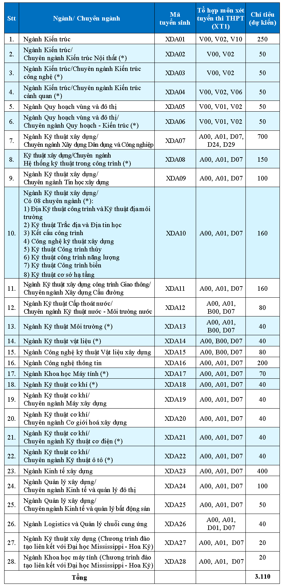
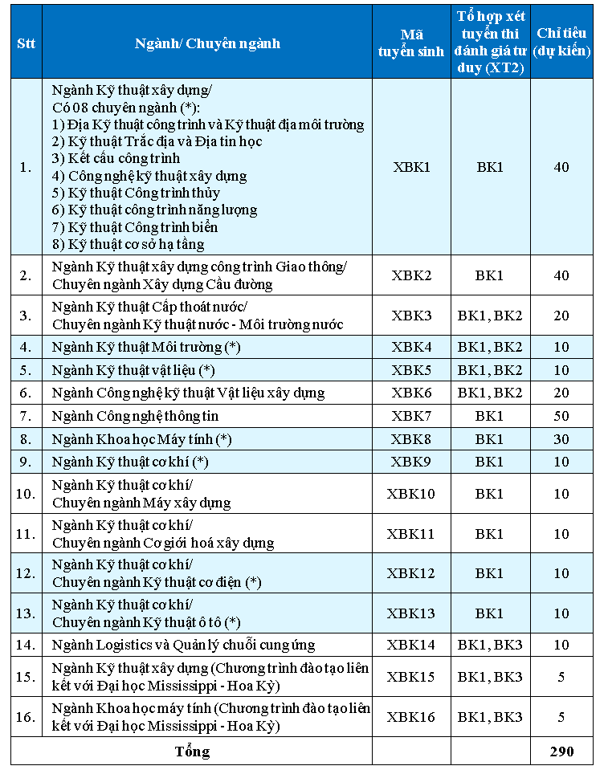
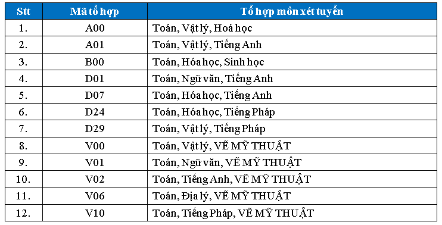
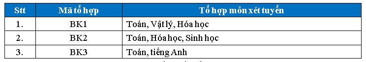

1. Phương thức tuyển sinh
1.1. Xét tuyển
- Xét tuyển sử dụng kết quả của kỳ thi tốt nghiệp THPT năm 2021. Với các tổ hợp có môn Vẽ Mỹ thuật kết hợp với tổ chức thi môn Vẽ Mỹ thuật tại Trường Đại học Xây dựng, trong đó môn Vẽ Mỹ thuật là môn thi chính, nhân hệ số 2.
- Xét tuyển sử dụng kết quả kỳ thi đánh giá tư duy năm 2021 do Trường Đại học Bách khoa Hà Nội tổ chức.
- Các ngành, chuyên ngành xét tuyển căn cứ vào chỉ tiêu của từng ngành/ chuyên ngành, nguyện vọng, kết quả kỳ thi tốt nghiệp THPT, kết quả kỳ thi đánh giá tư duy của Trường Đại học Bách khoa Hà Nội và kết quả thi môn Vẽ Mỹ thuật của thí sinh, không phân biệt tổ hợp môn xét tuyển.
- Không sử dụng tiêu chí phụ trong xét tuyển.
1.2. Tuyển thẳng kết hợp: Tuyển thẳng vào các ngành/chuyên ngành theo nguyện vọng nếu thí sinh thuộc một trong các đối tượng sau:
- Đối tượng 1: Thí sinh có một trong các chứng chỉ Ngoại ngữ quốc tế: Tiếng Anh (Tiếng Pháp) tương đương IELTS 5.0 trở lên; chứng chỉ quốc tế A-Level với tổ hợp kết quả 3 môn thi phù hợp các tổ hợp môn quy định của ngành/chuyên ngành xét tuyển, mức điểm mỗi môn thi đạt từ 60/100 điểm trở lên; có kết quả trong kỳ thi chuẩn hóa SAT đạt từ 1100/1600 hoặc ACT đạt từ 22/36 còn hiệu lực (tính đến ngày xét tuyển) và có tổng điểm 02 môn thi trong kỳ thi tốt nghiệp THPT năm 2021 thuộc tổ hợp xét tuyển (trong đó có môn Toán và một môn khác không phải ngoại ngữ) đạt từ 12,0 điểm trở lên.
- Đối tượng 2: Thí sinh đoạt các giải nhất, nhì, ba các môn thi học sinh giỏi từ cấp tỉnh, thành phố trực thuộc Trung ương. Các môn đoạt giải gồm: Toán (Tin học), Vật lý, Hóa học, Sinh học, Ngữ văn, Tiếng Anh (Tiếng Pháp) và có tổng điểm 02 môn thi trong kỳ thi tốt nghiệp THPT năm 2021 (không tính môn đoạt giải) thuộc tổ hợp xét tuyển đạt từ 12,0 điểm trở lên.
Với các tổ hợp có môn Vẽ Mỹ thuật, tổng điểm 02 môn thuộc tổ hợp xét tuyển (trong đó có 01 môn thi trong kỳ thi tốt nghiệp THPT năm 2021 và môn Vẽ Mỹ thuật) đạt từ 12,0 điểm trở lên.
1.3. Tuyển thẳng và ưu tiên xét tuyển: Theo Quy định của Bộ Giáo dục và Đào tạo và của Nhà trường
2. Ngành, chuyên ngành, tổ hợp môn xét tuyển và chỉ tiêu tuyển sinh
2.1. Ngành, chuyên ngành, tổ hợp môn xét tuyển sử dụng kết quả của kỳ thi tốt nghiệp THPT năm 2021 và chỉ tiêu tuyển sinh

2.2. Ngành, chuyên ngành, tổ hợp môn xét tuyển sử dụng kết quả kỳ thi đánh giá tư duy năm 2021 do Trường Đại học Bách khoa Hà Nội tổ chức và chỉ tiêu tuyển sinh

Ghi chú:
- (*): Các ngành, chuyên ngành đào tạo tiếp cận CDIO
- Ngành Kỹ thuật xây dựng (*) (có 8 chuyên ngành) xét tuyển theo ngành đào tạo, sinh viên trúng tuyển, nhập học theo chương trình chung trong 3 năm đầu, sau đó được phân chuyên ngành căn cứ vào chỉ tiêu, nguyện vọng và kết quả học tập của sinh viên.
- Mã tổ hợp và Tổ hợp môn xét tuyển kỳ thi tốt nghiệp THPT năm 2021:

- Mã tổ hợp và Tổ hợp xét tuyển kỳ thi đánh giá tư duy của Trường Đại học Bách khoa Hà Nội năm 2021:

3. Chương trình đào tạo Liên kết quốc tế với Đại học Mississippi – Hoa Kỳ (50 chỉ tiêu), gồm hai ngành:
. Kỹ thuật xây dựng (25 chỉ tiêu)
. Khoa học máy tính (25 chỉ tiêu)
Sinh viên học theo chương trình 2+2, 2 năm học tại Trường Đại học Xây dựng, 2 năm học tại Trường Đại học Mississippi. Sau khi hoàn thành khóa học, sinh viên được nhận bằng của Trường Đại học Mississippi.
4. Các chương trình đào tạo Chất lượng cao, Anh ngữ, Pháp ngữ: Xét tuyển sau khi nhập học vào trường gồm có:
4.1. Chương trình đào tạo Kỹ sư Chất lượng cao Việt - Pháp P.F.I.E.V (120 chỉ tiêu), hai năm đầu học theo chương trình chung sau đó phân vào các chuyên ngành:
. Cơ sở Hạ tầng giao thông
. Kỹ thuật đô thị
. Kỹ thuật Công trình thuỷ
. Vật liệu xây dựng
Chương trình PFIEV được thực hiện theo Nghị định thư ngày 12/11/1997 giữa Chính phủ Cộng hòa xã hội chủ nghĩa Việt Nam và Chính phủ Cộng hòa Pháp; chương trình được Ủy ban văn bằng kỹ sư Pháp (CTI), cơ quan kiểm định các chương trình đào tạo kỹ sư Châu Âu (ENAEE) và Bộ Giáo dục và Đào tạo Việt Nam công nhận tương đương trình độ Thạc sỹ.
4.2. Các chương trình đào tạo Pháp ngữ - Hợp tác với AUF (Tổ chức đại học Pháp ngữ) gồm có:
. Ngành Kỹ thuật xây dựng (Chuyên ngành: Xây dựng Dân dụng và Công nghiệp - XF: 50 chỉ tiêu).
. Ngành: Kiến trúc (KDF: 50 chỉ tiêu)
4.3. Các chương trình đào tạo Anh ngữ
. Ngành Kỹ thuật xây dựng (Chuyên ngành: Xây dựng Dân dụng và Công nghiệp - XE: 100 chỉ tiêu).
. Ngành: Kỹ thuật xây dựng công trình giao thông (Chuyên ngành Xây dựng Cầu đường - CDE: 50 chỉ tiêu).
. Ngành: Kỹ thuật Cấp thoát nước (Chuyên ngành: Kỹ thuật nước - Môi trường nước - MNE: 50 chỉ tiêu).
. Ngành: Kinh tế xây dựng (KTE: 50 chỉ tiêu)
. Ngành: Kiến trúc (KDE: 50 chỉ tiêu)
5. Mô hình và chương trình đào tạo
Từ khóa tuyển sinh năm 2020, các chương trình đào tạo của Trường Đại học Xây dựng được thiết kế theo 3 mô hình như sau:
a) Chương trình Cử nhân Kỹ thuật/ Kiến trúc (4 năm), người tốt nghiệp được cấp bằng Cử nhân (đại học).
b) Chương trình tích hợp Cử nhân - Kỹ sư/Kiến trúc sư (5 đến 5,5 năm), người tốt nghiệp được cấp bằng Cử nhân (đại học) và bằng Kỹ sư/ Kiến trúc sư (sau đại học).
c) Chương trình tích hợp Cử nhân - Thạc sĩ (5,5 năm), người tốt nghiệp được cấp bằng Cử nhân (đại học) và bằng Thạc sĩ (sau đại học).
Căn cứ vào kế hoạch cá nhân (học tập/ làm việc) sinh viên có thể quyết định lựa chọn và đăng ký chương trình phù hợp vào cuối năm thứ 3.